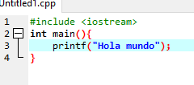
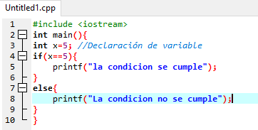
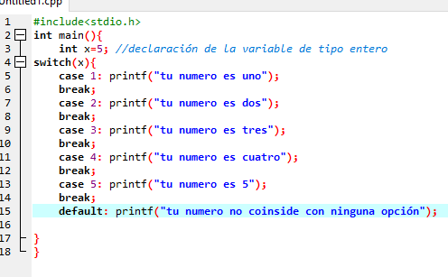
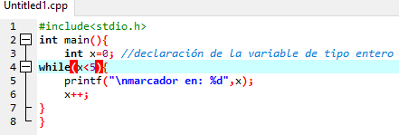
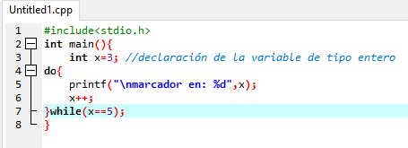
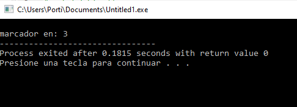

Encontrars información clara y ejercicios interesantes. Me puedes escribir dudas y yo con gusto las contestaré.
He notado que en muchas páginas que se da información de estos temas se da muchas vueltas y,
algunas veces, información innecesaria. Decidí crear este blog para que tú no te encuentres con
el mismo problema.
En algunas ocasiones doy mi opinión de algunos temas. Sé que muchos no
vienen a leer mi opinión por lo que siempre la doy al final de haber explicado el tema.
Este es un lenguaje de programación estructurado, el cual permite mucha flexibilidad, esto quiere decir que le da toda la responsabilidad al desarrollador con respecto a acciones que algunos otros lenguajes realizan por si mismos. Un ejemplo de esto es: que no se escriba en zonas de memoria que no pertenecen al área de datos del programa.
Es un paradigma de la programación que la divide en tres procesos, que se dice pueden resolver cualquier problema, estos son:
quiere decir que en el programa y código la estructura es la misma, y va de
arriba abajo.
Estas deciden, después de evaluar una condición, si se tiene o no que compilar
algunas líneas de código. Estas son:
La sentencia if, con su acompañante else, switch. Este tema es tocado a profundidad en
el apartado sentencias selectivas.
Repiten una acción hasta que se cumple una condición.
El codigo básico consiste en la sección de librerias, la identficamos por el signo # seguido de la palabra include. tenemos la sección de main() este es el metodo principal del programa y dentro de el será que llevemos acabo todo el codigo a excepción de la declaración de las clases, tema que se tratara después.
La entrada y salida de datos es fundamental a la hora de hacer un programa por motivos obvios. La sintaxis para la salida de datos es la siguiente: printf(“contenido”); Para la entrada de datos necesitamos la declaración previa de una variable. Es obvio que dependiendo del dato que se necesite es la variable que utilizaremos, para más información checa el apartado de variables. La sintaxis es la siguiente: scanf(“%d”,&nombre-dela-variable); dependiendo del tipo de variable será la letra que precede el símbolo de porcentaje. Antes del nombre de la variable no debes olvidar que siempre se pone un "&".
| valor | tipo de variable |
|---|---|
| %d | Entero |
| %f | Decimal |
| %s | Cadena |
La sintaxis para imprimir una variable es muy similiar a la que se ocupa en el scanf: printf("%d",x) solo que en este caso no se pone el simobolo amperson antes del nombre de la variable.
El desarrollador puede hacer que ciertas líneas de código sean o no leídas, esto por medio de la evaluación de una condición, si es que se cumple entonces se lleva a cabo lo que el programador desee. Enseñaremos dos: el if y el switch. Dependiendo la necesidad que tengas sabrás utilizar uno u otra. If: su traducción al es pañol es “si es que”, “si es que haces esto pasara lo otro”. Su traducción nos dice mucho. La condición va dentro de los paréntesis, en este caso vamos a comparar solo variables del tipo entero.
En caso de que no se cumpla se puede incluir un else, lo que va dentro de los corchetes de este son las lineas de código que se leeran en caso de que no se cumpla la condición.
Tenemos las siguientes opciones para evaluar una variable:
| Simbolo | Significado |
|---|---|
< |
Menor que. Si la variable es menor que el valor que queramos se ejecutara el código. |
| == | El doble igual no se debe confundir con un solo igual. Este es para la comparación de variables |
| > | Mayor que. Si la variable es mallor que el valor que queramos se ejecutara el código. |
| => | Se puede unir simbolos, en este caso el codigo se correra si la variable es igual y mayor al valor con el que lo comparemos. |
Se puede tener más de una condición y esto se logra concatenando la segunda condición con dos amperson: &&.
La otra opción que tenemos es la sentencia while. La variable para evaluar va entre los paréntesis antecedidos por la palabra while. Entre los paréntesis nos encontramos con tres palabras clave: Case, break y default. Después, si el valor de la variable coincide con el case, entonces ejecutara las líneas de código correspondientes. Si no es así continuara evaluando los demás case hasta encontrar el bueno. Si no coincide con ninguno entonces procederá a ejecutar las líneas del default.
Se repite uno o varios métodos hasta que una condición sea falsa, normalmente lo logramos sumando cierta cantidad a una variable cada que el ciclo se repite. Las herramientas que nos ofrece este lenguaje son las siguientes:
Todas las condiciones van dentro de los paréntesis, con el ciclo for no es diferente. Como podemos observar en la imagen se divide en tres la condición, cada una dividida por un punto y coma.
En la primera tenemos la declaración de la variable, la segunda nos indica cuando tiene que parar, la tercera si va a sumarse o a restarse, el doble símbolo de mas indica que se le va a sumar uno cada que se repita el ciclo, el doble menos indica que se le restara uno cada que se repita
While y for son casi lo mismo, lo que los hace diferentes es la sintaxis. En la siguiente imagen puedes observar la diferencia:
Es exactamente lo mismo, lo único que cambia es que evalua la condición después de haber terminado el metodo y no antes como lo hace el while. Aquí tienes un ejemplo:
 En este ejemplo el metodo se ejecuta una sola vez, pues no tenía una condición para iniciar. Si en lugar de ocupar un do while hubieramos ocupado un while no se hubiera ejecutada ni una vez.
La variable que hasta ahora hemos ocupado más es la de tipo int, la cual es de tipo entero, pero existen algunas otras que nos servirán a la hora de resolver problemas. Float, nos ayuda a guardar valores de tipo decimal. Char nos ayuda a guardar signos de cualquier tipo, ya sea letra o algún otro símbolo, para hacer una cadena de caracteres podemos crear un arreglo de este tipo de variable. La variable de tipo double es igual al float la diferencia radica en que este puede contener aproximadamente el doble de dígitos.